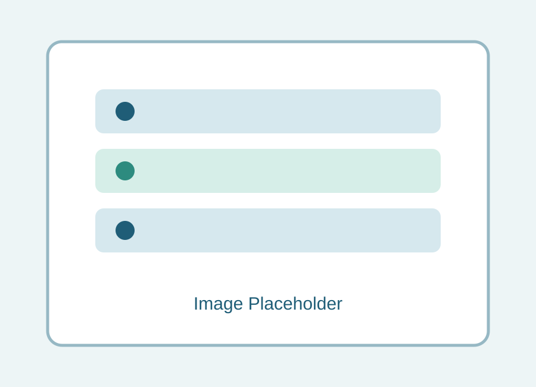

Anxiety
Support to manage anxious thoughts, panic symptoms, and worry cycles.
Our Services
Every service is delivered with confidentiality, empathy, and practical guidance tailored to your needs.
Support to manage anxious thoughts, panic symptoms, and worry cycles.
Trauma-informed therapy to process experiences and restore emotional safety.
Strategies to reduce overwhelm and improve emotional balance.
Guidance through transitions, grief, and adjustment after relationship change.
Compassionate support to build healthier patterns and maintain recovery goals.
Grief counseling for loss processing and gradual emotional healing.
Practical techniques for emotional regulation and resilience in daily life.
Couples support to improve communication, understanding, and connection.
Structured sessions to strengthen foundations before marriage.
Support for trust repair, clarity, and relationship decision-making.
Neutral facilitation to resolve conflict respectfully and constructively.
Career direction support focused on confidence, decision-making, and growth.
Post-incident emotional processing and stabilization support.

Sessions are designed around your personal goals and can focus on immediate support, long-term growth, or both. We aim to provide clear, compassionate care at every stage.
Schedule a Session